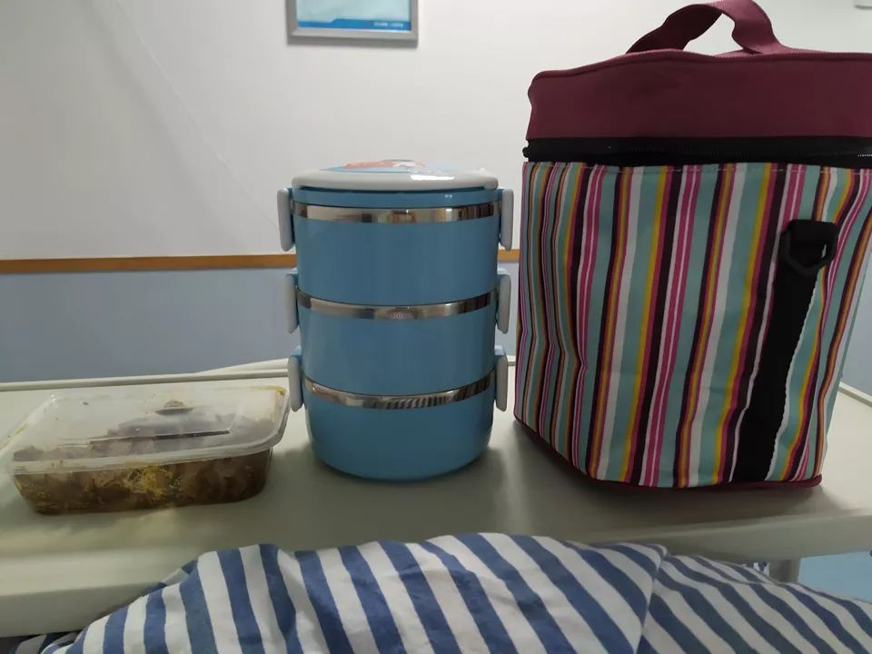

试剂盒供不应求，武汉新型冠状病毒肺炎确诊之难
原文链接 备份链接 根据国家卫健委的通报，截至1月23日零点，共统计到国内新型冠状病毒感染的肺炎确诊病例571例，其中超过400例来自湖北。死亡17例，均来自湖北。此刻的武汉面临以下问题：试剂盒数量不够、确诊艰难、床位短缺、高度疑似患者 …
************* ▲************* 在这间宽敞的隔离病房，我独自一人过年。 （林和黄供图/图）
▲************* 在这间宽敞的隔离病房，我独自一人过年。 （林和黄供图/图）
全文共*4830*字，阅读大约需要10分钟。
一位医务人员拿出两根约20厘米长的棉签，往我鼻孔里沾取分泌物，“两个鼻孔都要”。他还给了我一个圆柱体的透明小盒，让我“深深地吐口痰”在里面，“最好是深处的痰”。
没想到，只是有武汉旅行史，且过了14天潜伏期的人居然能用上核酸检测的试剂盒——这是确诊新型冠状病毒肺炎最准确的方式。
本文首发于南方周末 未经授权 不得转载
文 | 南方周末特约撰稿 林和黄
责任编辑 | 马肃平
“妈妈你在外面等我，进医院容易交叉感染。”大年三十的早上，安抚好母亲，我紧了紧脸上的口罩，迎着寒风走进了县城老家的人民医院，也是浙江省新型冠状病毒感染肺炎诊治的定点医院之一。
挂号台的工作人员戴着和我一样的蓝色医用口罩，黑色镜框后面是一双年轻的眼睛，问我“挂什么科”。我吸了一口气，说出了那句在脑海里反复练习了很久的话，“您好，我去过武汉，我想做一个检查”。
1
这是一个艰难的决定。
2019年底，武汉传出了“不明原因肺炎”风波。那时，我正在武汉出差，还曾路过后来闹得满城风雨的华南海鲜市场。我没有想到大约20天后，所谓“不明原因肺炎”会被纳入乙类传染病，并按鼠疫、霍乱这两种甲类传染病管理。
17年前SARS时，我才刚学加减乘除的年纪，现在回想起来，没有真正经历过传染病暴发的我，当时在武汉有太多保护措施没做到位。尽管我出差前买了N95口罩，但出门戴上一直到晚上回到酒店才摘掉；提前买好的医用手套居然码数过大，并不能完全阻隔双手和外界的接触，我也没有戴帽子。
2020年1月26日，中国疾控中心披露，华南海鲜市场西区七街和八街内部存在多家野生动物交易商铺，该区域检测出新型冠状病毒核酸阳性的标本比较集中。而那里，我都曾经过。

（新华社/图）
1月4日工作任务结束，我离开武汉。
关注新闻的我观察到，武汉市卫健委在1月11日之前发布的通告中始终表示，“未发现明显的人传人证据，未发现医务人员感染”，只是提醒市民必要时可佩戴口罩，如有发热、呼吸道感染症状，特别是持续发热不退，及时到医疗机构就诊。通告并未提及什么样的人群需要自我观察和居家隔离。
我连听到普通肺炎都害怕得不行，所以在武汉回来的一周内每天密切观察自己的体温，无特殊情况不外出，吃饭也基本都在家里随便做点吃。
5日至11日，武汉市卫健委连续6天没有通报新增病例，11日至16日发出的通告中，病例数始终维持在41例，重症及死亡患者几乎都是有严重基础疾病的中老年。我才放下心来，像大多数人那样，以为这件事已经翻篇，并投入春节前的年度总结工作中。
不过，13日开始我出现了发烧症状。服用退烧药的那晚，我出了一身汗，好在第二天体温就从38度恢复到正常，仅有一些鼻塞、咳嗽的轻症，没有胸闷、气促、反复发烧等可疑情况。这期间，我都待在家里不出门，坚持每隔一小时测腋下体温。
谁也没有料到，1月19日开始，新型冠状病毒就像开启的潘多拉魔盒，从最初的“可防可控”到上千人确诊，死亡病例不断上升，全国除西藏外都启动了一级响应。
1月23日，我家所在的浙江省在只确诊27例的情况下，在全国首先拉响了一级响应的警报，当时一些浙江亲友还质疑浙江省是不是“做得太过了”。
那时的我已经回到浙江家中，除了偶尔有点咳嗽外身体并无任何异常。回家后，由于担心路上可能存在交叉感染，我也一直戴好口罩居家隔离，从不出门，跟父母最亲密的接触就是去医院检查前拥抱了一下担忧的妈妈。
当时所有人都开始害怕，我开始后怕了。
2
1月22日，确诊人数超过200人的湖北省启动突发公共卫生事件Ⅱ级应急响应。同日，老家的肺炎防控工作领导小组发布公告称，“近20天内有武汉旅行或居住史，或与武汉籍人员有密切接触”的人员不要恐慌，请及时与卫生院联系。
20天，其实超过了该肺炎14天的潜伏期，却正好与我在武汉出差的日期有所重合。虽然我没有任何不适，但是为了家人的健康与安全，我还是决定去医院检查。
大年三十的医院终于不再人头攒动。挂号台的工作人员很淡定，没有因为我的陈述而停顿，有条不紊地在病历本上记录下我的姓名、年龄、家庭住址、手机号码，帮我挂好发热门诊的号，并给了我一个去分诊台的手势。
分诊台的护士得知我去过武汉后反倒有点儿慌乱，小热水袋从左手换到右手，又从右手换到左手，眼神也不敢直视我。一个护士给我测量并记录好体温后，另一位“全副武装”的医务人员就出现在我面前，引导我这位“可疑人士”前往发热门诊。
所谓“发热门诊”，并不是设置在普通门诊楼内的某个科室，而是门诊大楼外空地上的一片低矮板房。这里的气氛明显比门诊紧张严肃。每个医生都罩在蓝色的防护服下，有人给我和一位刚从湖北仙桃老家回浙工作的大哥发了一个医用口罩和防护帽。当时的我没有想到，这顶防护帽将陪伴我度过除夕夜，直到年初四才能摘下来。

发热门诊内的摆设。（林和黄供图/图）
武汉接触史是医生例行询问中非常重要的一部分。我拿出手机，翻开前一晚失眠到凌晨2点整理好的详细出行经历，按时间顺序一条条告知了医生，还补充了一句，“您还有什么想要了解的吗？”正在奋笔疾书的医生听到后，抬起头奇怪地看了我一眼。
“家属联系方式给一下我。”我把妈妈的联系方式给她。之前没有想到武汉疫情会变得如此严重，我并没有告知父母我曾去武汉出差。现在，他们要从医生的口中知道女儿不久前去过这个霸占新闻头条的城市，我有点心疼家人，他们该会是多么担心和害怕。
抽了一管血后，我被引导去板房对面的一辆大巴拍胸片。血常规和胸片结果需要一小时后才能出来，旁边仙桃大哥明显有点慌乱，反复说他只是从仙桃老家出发去武昌坐火车回了浙江，并未在武汉市内停留，手头还有工作要做。
等待结果的一小时显得无比漫长和无奈。说实话，我觉得自己不是感染者——我早已过了14天的潜伏期，现在也没有发烧之类的明显可疑症状。但我毕竟在离开武汉后发过烧。会不会可能感染过病毒，只是年轻而强大的免疫系统战胜了病毒？这对我的肺部和其他器官会不会造成后遗症？
万分焦急中，我等来了一个好消息和一个不算坏的消息。
好消息是，我的血常规检查没有异样，胸片也没有问题——双肺清晰、没有一点磨玻璃阴影，也不符合感染后自愈的情况。
不算坏的消息是，我和仙桃大哥的“嫌疑”仍未解除，医生建议我们住进隔离病房做进一步的检查确诊。
3
听到这个消息，我是震惊的，在此之前我的身体一直比较健康，从未住过院。
另一头，等在医院外的妈妈已经知道我去过武汉——“可疑人士”的信息需要层层上报，小县城里的人不是邻里乡亲就是同学同事，古老的人情关系瓦解了密不透风的信息墙。
卫生和政府系统的朋友得到消息后，都打电话给家人了解我的情况，并尽力告知后续的检查安排。家人得知，县城没有确诊病例，连一例疑似也没有，同时县里为了防疫做了许多准备工作。一位医生还说，像我这样目前没有发烧的人感染概率很低，让父母不要过度忧虑。
隔离病区是专门为此次疫情腾出来的。医生“全副武装”，手套、鞋套、护目镜一应俱全，一靠近他们就有浓重的酒精味儿扑面而来。
住进隔离病房之后，一连来了好几拨医生，有县城医院的，也有县疾控中心的。严丝合缝的防护服穿得他们满身大汗，连护目镜都蒙上了一层细细的水珠。我把我的经历反复说了很多遍，来的每一位医务人员都刷刷地做着记录。
一位医务人员拿出两根约20厘米长的棉签，叫我往鼻孔里沾取分泌物，“两个鼻孔都要”。他还给了我一个圆柱体的透明小盒，让我“深深地吐口痰”在里面，“最好是深处的痰”。当着别人的面吐痰？我内心是拒绝的，但还是得乖乖听话。后来我才知道，这是要把我的样本去做试剂盒检测。
单人间的隔离病房没有Wi-Fi，也没有电视，我给手机充了5个G的流量，在各种信息和辟谣中刷到头昏脑胀。印象深刻的是，《人物》杂志的一篇报道提到，试剂盒在生产、采购、运输各个环节都压力山大，想要确诊也困难重重。
没想到，只是有武汉旅行史，且过了14天潜伏期的人居然能用上核酸检测的试剂盒——这是确诊新型冠状病毒肺炎最准确的方式。
这天是除夕夜，妈妈特地找出一个全新的蓝色保温盒，把年夜饭给我送到隔离病区的楼外。护士提醒她，送进隔离病房的饭菜最好放在一次性饭盒里。
窗外的鞭炮声轻易穿透了不太隔音的房间，我打开微信和父母视频，向他们展示了传说中的隔离病房，告诉他们我测了三次体温都没有发烧，让他们放心去看春晚。我也打开了手机上的春晚直播，鲜艳的舞台色调和医院床单被套的蓝白色条纹形成了鲜明对比。

妈妈用保温桶给我送年夜饭。 （林和黄供图/图）
医院里的作息时间仿佛总比外面的世界提早一两个小时。11点不到，护士便来提醒我可以睡觉了，还没来得及对她说一声“新年快乐”，她就忙着去下一个病房了。我“入乡随俗”地关灯，在略有些硬实的床板上躺下，一直到看到易烊千玺扭着腰出现在春晚舞台上，我才心满意足地睡去。
采完样的第二天下午2点半左右，家人迫不及待地打电话告知，我的试剂盒初筛结果出来了，是阴性——这意味着我没有感染新型冠状病毒，等医务人员从上至下层层传达消息到我这儿，已是晚上9点半。
吊起的心终于落了一大半。
4
根据国家卫健委公布的诊疗方案，连续两次核酸检测阴性（采样时间间隔至少一天），才能解除隔离出院。
第二天，一位来查房的医生称，第一次试剂盒结果出来后，按规定48小时后才能做第二个核酸试剂盒检测，县城的检测能力有限，所有本县采集的样本都会送到市疾控统一检测，如果送检的样本数量较多，检测结果就会晚一点儿出来，“一般2-5小时即可知道结果”。
而一位隔离病房的值班护士则称，上面规定的两个试剂盒间隔检测时间总是“变来变去”，让我先好好休息。
在这本该属于家人团圆的48小时内，我进行了包括血压、尿常规、降钙素原测定在内的数十项测验，每日早晚服用一粒治疗流感的奥司他韦，左小臂静脉里埋着一根留置针，方便医生给我抽血和输液。每次呼吸，那根针的凉意似乎能透出皮肤。
阴性的初筛结果出来后，我的身体状况不错，不用再输液，护士每隔两小时左右来看望我一次。从她们那里我还了解到，县城医院的防疫物资虽然谈不上充裕，但目前的储备情况也还可以接受，“没有杭州和宁波紧张”。
值班护士身兼数职，我经常听见她们在走廊里快速走动的声音。除了查看病房情况和输液测温的日常检查外，护士还需把家属送来的生活用品和餐食送到病人手上，病人情绪不稳定大喊大叫要出院时，护士要负责安抚病人。
习惯了城市喧嚣的我，觉得隔离病房的夜晚实在过于安静，只听得见隔壁偶尔的咳嗽声和窗外淅淅沥沥的雨声。
48小时之后，第二次核酸检测如期而至，只是这次我等待结果的时间要比第一次长很多。
1月26日下午4时左右，防护帽紧缺的我已经一连三天戴着同一顶帽子，遮住我日渐油腻的头发。一位医务人员带来了长棉签和“吐痰盒”。和第一次检测不同的是，长棉签用于提取我喉咙深处的分泌物，这些样本将由专人负责送去市里统一检测。
一位卫生系统的朋友告诉我，这两天市里需要检验的样本数量激增，负责核酸检验的实验室通宵达旦地工作，我的样本也正排队检测中。1月28日上午9时许，我被告知第二次试剂盒结果也是阴性，可以出院，但还是要在家继续观察一周。
回到家里，家人才告诉我，尽管社区、医院和县政府尽力保护隔离病人的隐私，一位邻居还是知道了，她“提醒”我们全家上下楼不能使用电梯只能走楼梯，并迅速将我的个人信息和我家门牌号码告知了物业，还“广而告之”她认识的人，小区里有我这样一号“可疑人士”。
物业对于确诊、疑似和医学观察人员的区别了解甚少，四处传播关于我的不实消息，甚至一度不允许我家汽车开进车库，含糊其辞地解释这是因为“下雨天怕雨水进入车库”。然而，2019年台风“利奇马”给浙江带来强降雨时，小区都未曾有过这样的规定。
那一刻，明明没有感染病毒的我，觉得自己差点成了故乡的“罪人”。

征集

《南方周末》现向所有身处新冠肺炎一线的读者公开征集新闻线索。我们欢迎武汉及周边城市医患联系记者，提供防疫前线的一手资讯，讲述您的新春疫情见闻。若您不在武汉，但您身处之所也有与疫情相关的重要新闻线索，亦欢迎您与我们分享。疫情仍在蔓延，南方周末将执笔记录每位国人在疫情面前的希望与困境，与广大读者共同面对疫情。祝愿所有读者朋友们，新春平安。线索可直接给本篇文章留言，格式为：【线索】+内容+您的电话（绝对会对您的个人信息保密）


原文链接 备份链接 根据国家卫健委的通报，截至1月23日零点，共统计到国内新型冠状病毒感染的肺炎确诊病例571例，其中超过400例来自湖北。死亡17例，均来自湖北。此刻的武汉面临以下问题：试剂盒数量不够、确诊艰难、床位短缺、高度疑似患者 …
原文链接 备份链接 审慎的通报流程、破格启用的检测手段，以及实验室级别的硬性规定，如何影响了整个过程的时效性？ 记者 | 许冰清 编辑 | 陈 锐、王姗姗 制图 | 程 星 2020年1月28日，国家卫健委对外发布通报称，截至1月27 …
原文链接 备份链接 武汉某大型医院血液科医生朱洪亮表示，其实这个季节除了新型冠状病毒之外，还有很多如甲流、乙流等病毒流行，这些病毒也会引起发热和肺炎等症状，比较常见。但现在一些发热病人都涌向发热门诊，面对这种压力，武汉的医疗资源是承受不了 …
原文链接 备份链接 *************▲*************1月24日，在武汉大学中南医院重症隔离病房，医护人员为病人治疗。 （新华社记者 熊琦/图） 全文共*2789*字，阅读大约需要6分钟 “黄冈市19日晚间获得了第一批 …
原文链接 备份链接 试剂盒的供给端产量充足，并非“供不应求”，而是卡在了春节运力紧张、高门槛的检测条件、以及相关药品资质的审批上。为此，国家药监局已于近日开启快速审批通道。 记者 | 黄子懿 严岩 除夕夜：12万人份的试剂盒 ▲▲▲ 1 …